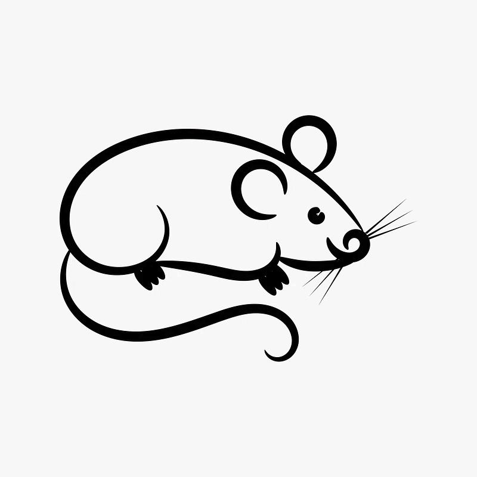
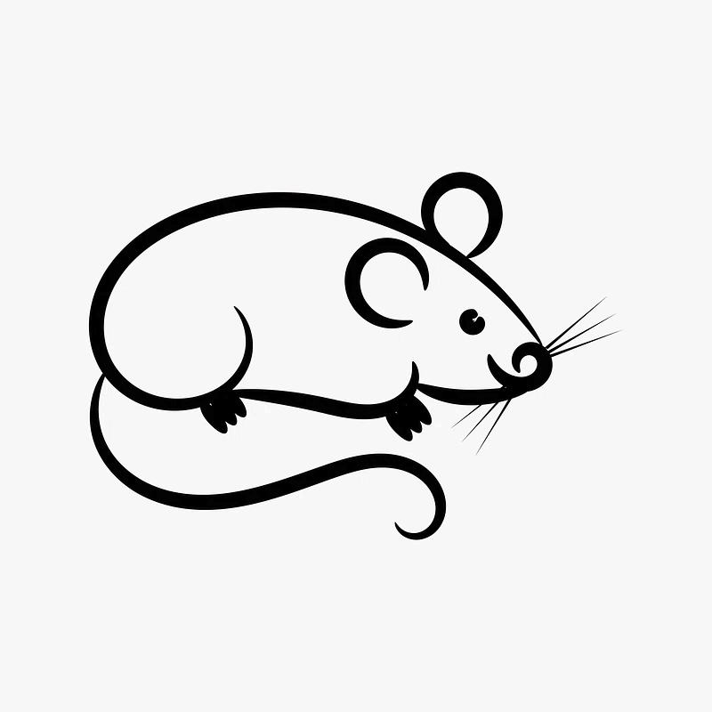

Ratón de

Ratón de Sobre este sitio
Bienvenidos a Ratón de Biblioteca, la mejor página para encontrar reseñas relacionadas con tus libros favoritos.
Desde las sagas más conocidas hasta las obras de nicho, si está escrito en papel, está aquí.
Puedes comenzar tu búsqueda clicando en la lista de géneros de la izquierda, o clicando géneros
en la barra de navegación superior